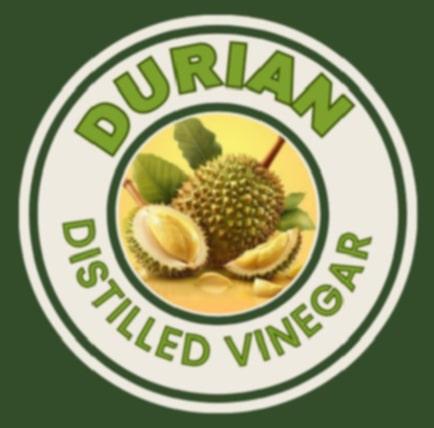

DURIAN DISTILLED VINEGAR

PROCEDURE FOR MAKING DURIAN VINEGAR
1. Prepare the Durian Pulp:
- Remove the durian pulp from the fruit, ensuring it is clean and free from any seeds or unwanted particles.
2. Blending the Mixture:
- Combine the durian pulp with water in the container.
- Use a blender to blend the mixture thoroughly until you achieve a smooth and well-mixed consistency.
3. Adding Sugar and Yeast:
- Add sugar to the blended mixture, using 1 tablespoon of sugar per cup of water.
- Stir the mixture well until the sugar is dissolved.
- Sprinkle the yeast over the surface of the mixture.